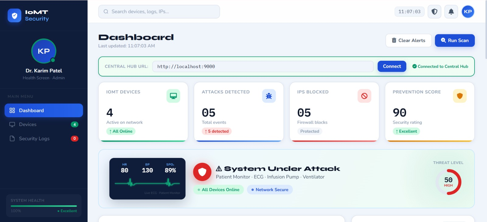
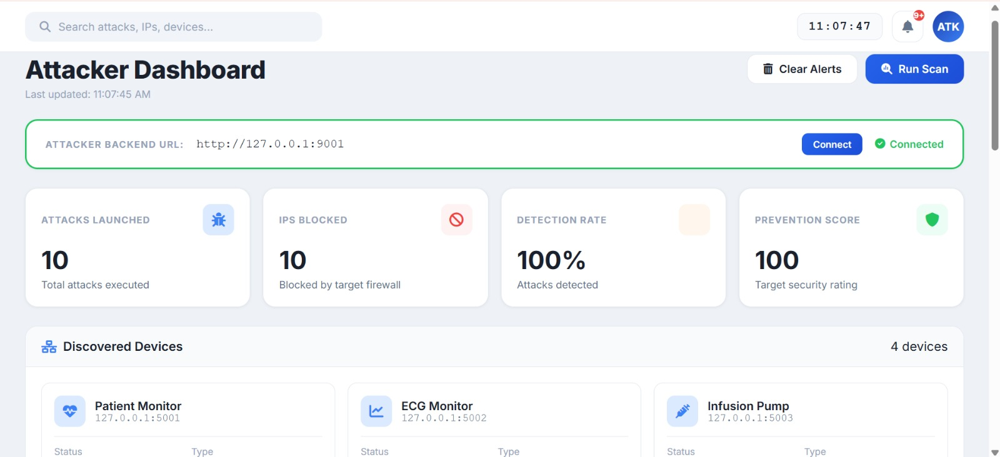
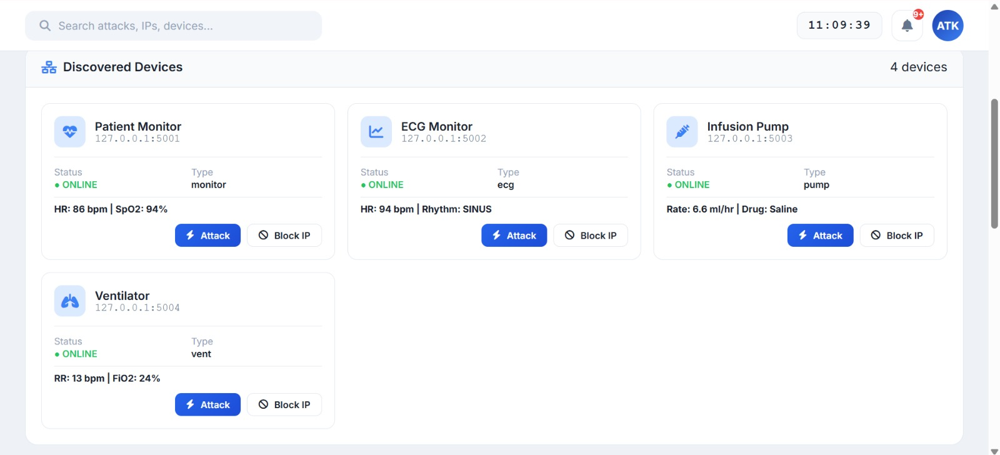
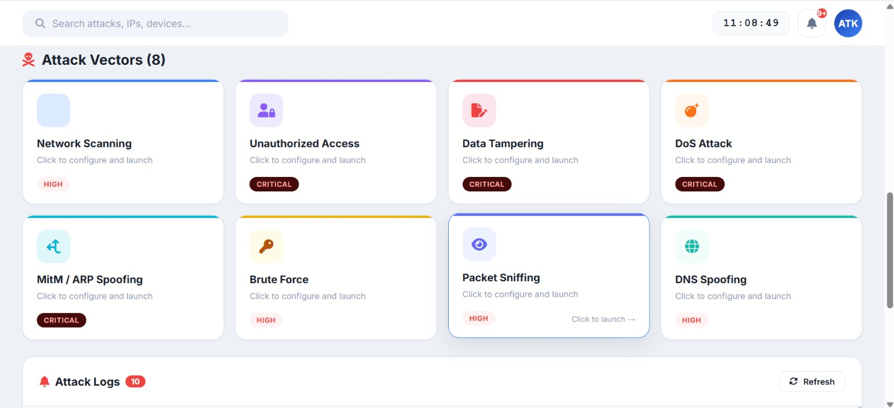
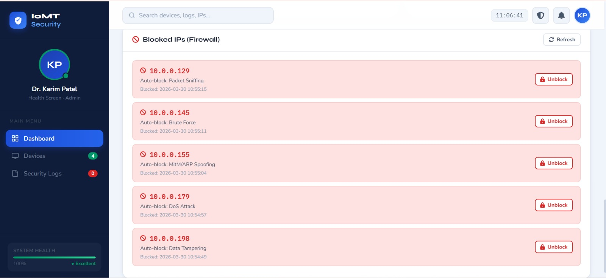
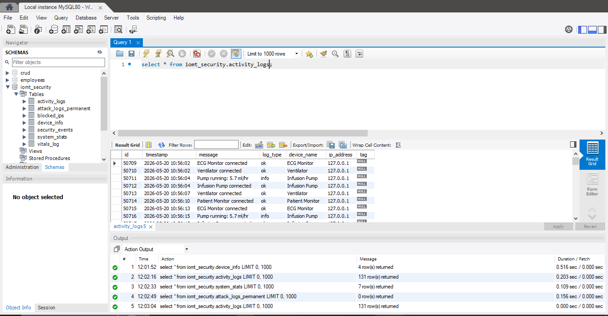

Detection & Mitigation of Network Attacks on Medical IoMT Devices
A real-time cybersecurity system designed to monitor simulated Medical IoT devices, detect network-based attacks, and automatically mitigate malicious activity.
Overview
A real-time cybersecurity system developed to monitor simulated Medical IoT (IoMT) devices, detect network-based attacks, and automatically mitigate malicious activity. The system combines network traffic analysis, signature-based threat detection, automated IP blocking, centralized security logging, and real-time dashboards within a simulated healthcare environment.
The Problem
Connected medical devices such as patient monitors, ECG systems, infusion pumps, and ventilators continuously exchange sensitive data over networks. Their connectivity introduces security risks including network scanning, unauthorized access, data tampering, denial-of-service attacks, spoofing, and other network threats.
Traditional security mechanisms may lack IoMT-specific monitoring and often depend on manual intervention after an alert is generated. This project addresses the need for continuous monitoring and automated threat response in a simulated medical-device environment.
Objectives
- Monitor network activity across connected IoMT devices in real time.
- Detect predefined network attacks using signature-based rules.
- Identify and classify suspicious activities based on attack patterns.
- Automatically block malicious IP addresses at the firewall level.
- Maintain persistent security and attack logs for analysis.
- Provide centralized dashboards for real-time monitoring and attack simulation.
Detection Pipeline
The system follows a continuous detection and response workflow:
Network packets and request information generated by the simulated IoMT devices are captured and analyzed using predefined attack signatures. When suspicious activity is detected, the system classifies the threat, records the event, alerts the security dashboard, and automatically blocks the malicious source IP.
Architecture
The system follows a centralized security architecture consisting of multiple layers:
IoMT Device Simulation Layer
Simulates a Patient Monitor, ECG Monitor, Infusion Pump, and Ventilator.
Central Security Hub
Monitors device communication and coordinates detection and response.
Packet Analysis Layer
Captures and analyzes network traffic using Scapy and PyShark.
Detection Engine
Applies predefined rules to identify supported attack patterns.
Response Layer
Automatically blocks malicious IP addresses through firewall rules.
Database Layer
Stores device information, security events, attack logs, vitals, and blocked IP addresses.
Dashboard Layer
Provides real-time security monitoring and controlled attack simulation.
Key Features
Project Showcase
A look at the working system — dashboards, live detection, and attack simulation in action.






Technical Implementation
The backend is built with Python and Flask, providing REST APIs for communication between the IoMT devices, central security hub, attacker module, dashboards, and database.
Scapy, PyShark, and Tshark are used for network packet capture and analysis, while python-nmap supports network scanning functionality.
Four IoMT devices are simulated using independent Python modules. The central hub.py monitors their communication and processes security events, while attacker.py provides controlled simulation of network attacks for testing.
Detected events are stored in a MySQL database containing seven tables:
- vitals_log
- security_events
- blocked_ips
- device_info
- activity_logs
- system_stats
The dashboards are developed using HTML5, CSS3, and JavaScript, with AJAX/Fetch communication to the Flask backend. Chart.js and HTML5 Canvas are used for data visualization.
Challenges
- Simulating realistic communication between multiple IoMT devices.
- Capturing and analyzing network traffic without disrupting normal device activity.
- Designing reliable rules for different attack patterns.
- Coordinating real-time communication between multiple Python modules.
- Integrating automated firewall-based mitigation with the detection workflow.
- Maintaining synchronized security events, attack logs, and device data.
- Presenting continuously changing security and patient data through a responsive dashboard.
Outcome & Future Scope
The system was successfully tested in a simulated IoMT environment with 4 devices, detecting 5 attacks and automatically blocking 5 malicious IPs. The reported test scenarios achieved a 100% detection rate, with a prevention score above 90. The report also records an automated detection-to-blocking cycle of under 500 ms.
Future enhancements include:
- Machine-learning-based and anomaly-based threat detection.
- Hybrid detection combining signatures and behavioral analysis.
- Advanced threat intelligence integration.
- Deployment with real medical hardware.
- Integration with hospital production networks.
- Integration with existing IDS, firewalls, and SIEM platforms.
- More adaptive detection for emerging and unknown attack patterns.
- Cloud-based centralized monitoring and security analytics.